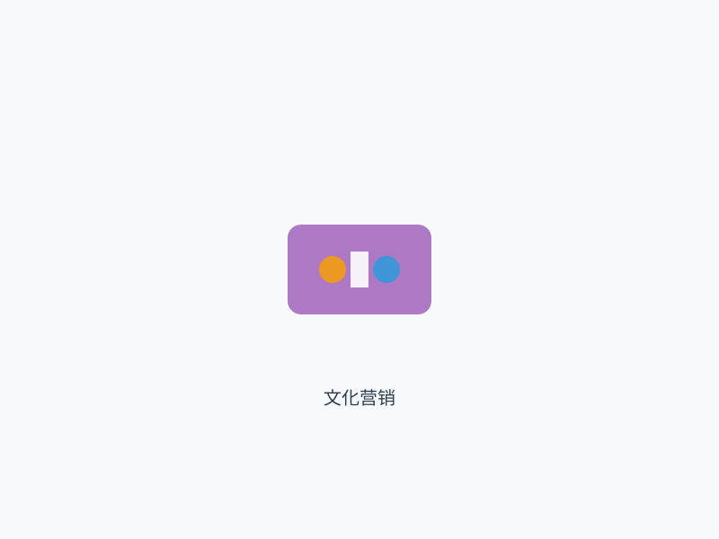

医美营销是一种特殊的营销活动，它既具有一般营销的共性特征，又具有医美行业的个性特点。理解医美营销的心理学基础，对于制定有效的营销策略和引导健康的消费行为具有重要意义。
医美营销的首要任务是激发和创造消费者的需求。与一般商品不同，医美需求往往不是显性的，而是潜在的。消费者可能并没有意识到自己的医美需求，或者对医美服务存在顾虑和疑虑。营销活动需要通过有效的沟通和教育，帮助消费者认识到自己的需求，并激发改变的动力。
我们的研究发现，有效的需求激发需要基于对消费者心理的深入理解。这包括对外貌焦虑的把握、对美丽标准的理解、对社会影响的认知等。营销活动需要避免制造焦虑或利用不安，而应该基于积极的价值观和健康的心态，帮助消费者实现自我提升的目标。
信任是医美营销的核心要素。由于医美服务涉及高风险的身体改变，消费者对服务提供者的信任度要求极高。医美营销需要通过多种方式建立和维护消费者的信任，这包括专业形象的塑造、成功案例的展示、客户评价的分享、资质认证的强调等。
我们的研究表明，消费者对医美机构的信任建立在四个关键因素上：专业能力、服务质量、诚信态度、社会责任。营销活动需要围绕这四个要素展开，通过一致的信息传递和真实的价值展示，建立长期稳定的信任关系。
医美消费具有强烈的情感色彩，营销活动需要建立与消费者的情感连接。通过理解消费者的情感需求，营销信息能够产生更强的共鸣和吸引力。这种情感连接不仅能够提升营销效果，还能够增强消费者的品牌忠诚度。
我们的研究发现，有效的情感营销需要把握几个关键点：真实性的表达、同理心的展现、积极价值观的传递、个性化需求的关注。营销活动应该避免过度煽情或虚假承诺，而应该基于真实的消费者洞察，建立真诚的情感连接。

文化因素在营销传播中的影响机制和策略应用框架
社会认同在医美消费中起着重要作用，营销活动需要善用社会影响的力量。通过展示社会认同、专家推荐、用户见证等方式，营销信息能够增强消费者的信心和决策动力。
我们的研究表明，社会认同对医美消费的影响主要体现在几个方面：从众心理、权威影响、同伴压力、社会标准。营销活动需要合理利用这些社会影响机制，引导消费者做出理性和健康的选择。
医美消费者的决策路径是一个复杂的过程，涉及多个阶段和多种因素。理解消费者的决策路径，对于优化营销策略和提升转化效果具有重要意义。
认知阶段是消费者决策路径的起点，在这个阶段，消费者开始意识到自己的医美需求，并开始关注相关信息。营销活动需要通过多种渠道提高品牌和服务的曝光度，建立初步的品牌认知。
我们的研究发现，认知阶段的营销效果取决于几个关键因素：信息的相关性、传播的广泛性、品牌的识别度、信息的记忆度。营销活动需要确保信息能够准确触达目标受众，并留下深刻的印象。
考虑阶段是消费者开始积极收集和评估信息的阶段。在这个阶段，消费者会比较不同的服务提供商，评估各种选择的优劣。营销活动需要提供详细和准确的信息，帮助消费者进行理性的比较和选择。
我们的研究表明，考虑阶段的消费者最关注的信息包括：技术专业性、价格合理性、服务可靠性、安全性保障。营销活动需要针对这些关注点，提供有说服力的信息和支持证据。
决策阶段是消费者做出最终选择的阶段。在这个阶段，消费者需要额外的推动和支持来做出决策。营销活动需要通过优惠促销、专家咨询、用户见证等方式，提供决策的最后一推力。
我们的研究发现，决策阶段的营销效果取决于几个关键因素：紧迫感的营造、风险的降低、价值的强化、便利性的提升。营销活动需要在尊重消费者决策自主权的前提下，提供必要的支持和引导。
购后阶段是消费者体验服务和形成评价的阶段。在这个阶段，营销活动需要关注消费者的体验和满意度，培养长期的客户关系。良好的购后体验不仅能够提高客户忠诚度，还能够带来口碑传播和新客户获取。
我们的研究表明，购后阶段的营销重点包括：服务体验的优化、客户关系的维护、口碑传播的激励、重复消费的促进。通过系统化的客户关系管理，医美机构能够建立稳定的客户基础和持续的业务增长。
数字营销已成为医美行业的主要营销方式，但其效果评估和优化仍面临诸多挑战。建立科学的数字营销评估体系，对于提升营销效率和投资回报率具有重要意义。
流量获取是数字营销的基础目标，但流量的质量和相关性比数量更为重要。我们的研究发现，高质量的流量来源包括搜索引擎优化、内容营销、社交媒体营销、KOL合作等。这些渠道能够带来更具相关性和转化潜力的流量。
流量获取的效果评估需要关注多个指标：流量数量、流量质量、获客成本、转化率、投资回报率。通过综合分析这些指标，医美机构能够优化流量获取策略，提高营销效率。
内容营销是数字营销的核心策略，通过提供有价值的内容来吸引和影响目标受众。我们的研究表明，有效的内容营销需要基于对目标受众的深入理解，提供真正有价值的信息和见解。
内容营销的效果评估包括几个维度：内容的传播度、内容的参与度、内容的转化率、内容的长期价值。通过持续的内容优化和迭代，医美机构能够建立专业权威形象，培养稳定的受众群体。
社交媒体是医美数字营销的重要渠道，具有传播速度快、互动性强、影响力大的特点。我们的研究发现，社交媒体营销的成功关键在于真实性和互动性。
社交媒体营销的效果评估需要关注：粉丝增长、互动率、传播范围、情感倾向、转化效果。通过科学的社交媒体分析和优化，医美机构能够建立活跃的社群，增强品牌影响力。
数据驱动的营销优化是数字营销的发展趋势。通过收集和分析各种营销数据，医美机构能够深入了解消费者行为，优化营销策略，提升营销效果。
数据驱动营销的关键要素包括：数据收集的全面性、数据分析的科学性、决策制定的及时性、执行调整的灵活性。通过建立完善的数据分析和决策体系，医美机构能够实现营销的持续优化和改进。
品牌建设是医美营销的长期战略，通过建立独特的品牌形象和价值主张，在消费者心智中占据有利位置。理解品牌建设的心理策略，对于构建持久和有价值的品牌具有重要意义。
品牌定位是品牌建设的基础，它决定了品牌在消费者心智中的位置和形象。我们的研究表明，有效的品牌定位需要基于对目标消费者心理需求的深入理解，以及市场竞争格局的准确把握。
品牌定位的心理策略包括：差异化定位、情感化定位、价值化定位、专业化定位。通过明确的品牌定位，医美机构能够在竞争激烈的市场中建立独特的品牌识别和竞争优势。
品牌识别的一致性是品牌建设的关键要素。消费者对品牌的认知和记忆建立在一致的品牌识别基础上。我们的研究发现，品牌识别的一致性包括视觉识别、语言识别、行为识别等多个方面。
品牌识别的一致性建设需要：统一的视觉形象、一致的语言风格、协调的行为规范、清晰的价值主张。通过全方位的品牌识别管理，医美机构能够建立清晰和一致的品牌形象。
品牌情感是品牌与消费者之间的情感连接，它超越了理性的功能认知，建立了更深层次的品牌关系。我们的研究表明，品牌情感的建立需要基于真实的品牌价值观和消费者情感需求。
品牌情感的建设策略包括：情感化的品牌故事、共鸣性的品牌信息、互动性的品牌体验、记忆性的品牌时刻。通过这些策略，医美机构能够建立与消费者的深度情感连接，增强品牌忠诚度。
品牌价值是品牌建设的核心，它代表了品牌对消费者的承诺和贡献。我们的研究发现，品牌价值的传递需要通过多种渠道和方式，确保消费者能够感知和认可品牌的价值。
品牌价值的传递策略包括：明确的价值主张、一致的价值表达、实际的价值证明、持续的价值创新。通过系统化的品牌价值管理，医美机构能够建立持久和有价值的品牌资产。
本工具帮助医美机构系统评估营销活动的效果，识别优化机会，提升营销效率。
流量获取效果（1-5分）
内容营销效果（1-5分）
转化效果评估（1-5分）
本工具帮助医美机构优化数字营销渠道配置，提升整体营销效果。
搜索引擎营销
社交媒体营销
内容营销
某知名医美连锁机构通过全面的数字化转型，实现了营销效果的显著提升和业务规模的快速增长。该机构建立了完整的数字营销体系，包括数据平台、内容中心、社交媒体矩阵等。
核心策略：
实施效果：
成功经验：数据驱动、内容为王、全渠道整合、持续优化。